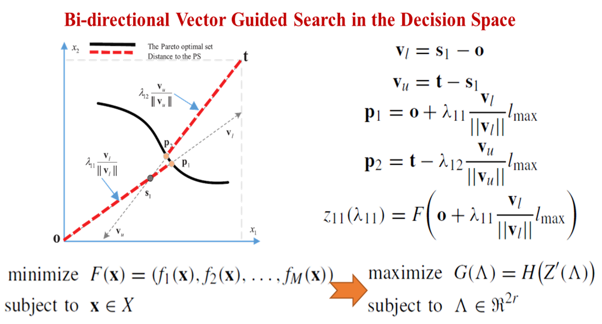
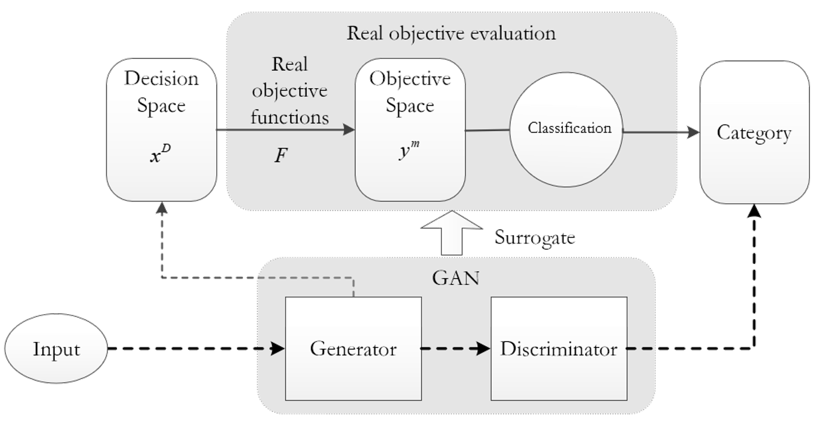
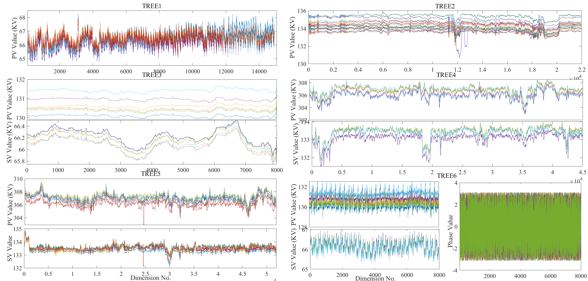
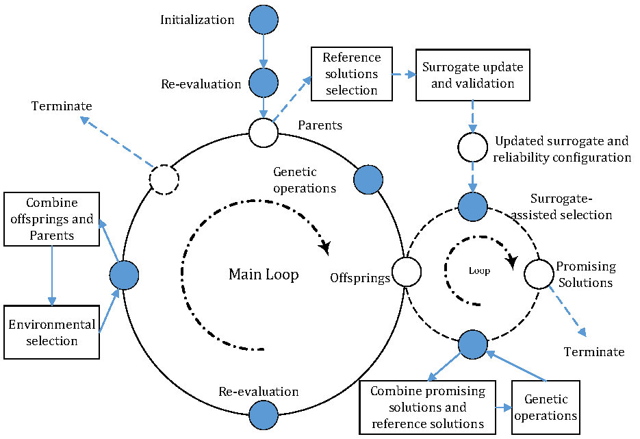

Computational Intelligence and Evolutionary Optimization
Evolutionary multi-objective optimization, surrogate-assisted search, model-based optimization, and large-scale optimization for high-dimensional engineering problems.
Computational intelligence for power and engineering systems
Associate Professor, Associate Head of Department
School of Electrical and Electronic Engineering, Huazhong University of Science and Technology
Computational Intelligence for Smart Grid, Advanced Electrical Sensing, and AI-driven Engineering Systems.
Dr. Cheng He develops computational intelligence and evolutionary optimization methods that connect algorithmic advances with real-world electrical engineering challenges, including smart grid sensing, power measurement, instrument transformers, contactless sensing, and reliable AI-enabled engineering systems.
Research themes
Evolutionary multi-objective optimization, surrogate-assisted search, model-based optimization, and large-scale optimization for high-dimensional engineering problems.
Intelligent power measurement, instrument transformer error evaluation, contactless current and voltage sensing, and dependable metrology for modern power systems.
Data-driven modeling, deep learning, large models, and optimization-guided design for complex electrical, industrial, and interdisciplinary applications.
Research impact
Recent news
Dr. Cheng He was invited as an expert speaker at the "Accurate Metrology, Smart Future" 2026 World Metrology Day Theme Event in Wuhan, China, discussing intelligent large models for power measurement equipment.
The paper "Online Evaluation of Measurement Uncertainty in Sensor Networks: A Case Study on Voltage Transformers" was accepted to IEEE Transactions on Industrial Informatics.
Recent work covers surrogate-assisted gene selection for large-scale single-cell data and knowledge-assisted contactless current measurement for multiconductor systems.
Dr. Cheng He discussed challenges and opportunities in large-scale multi-objective optimization during DOCS 2024. The interview is available online.
Selected work
IEEE Transactions on Industrial Informatics, 2026
A recursive framework for network-level online evaluation of measurement uncertainties. The method incorporates a measurement model capturing interdevice dependencies and Monte Carlo propagation, with Bayesian fusion for reliable uncertainty estimation across the sensor network—validated on the IEEE 30-node system and real-world power grid data.

IEEE Transactions on Evolutionary Computation, 2019
A representative reformulation-based framework for large-scale multi-objective optimization, connecting decision-variable analysis with efficient evolutionary search.

IEEE Transactions on Cybernetics, 2021
This work introduced distribution-learning offspring generation with GANs, advancing model-based evolutionary computation for complex multi-objective search.

IEEE Transactions on Evolutionary Computation, 2020
The TREE benchmark translates practical voltage transformer ratio error estimation into a large-scale constrained optimization setting for smart grid measurement.

IEEE Transactions on Evolutionary Computation, 2018
CSEA uses classification to approximate dominance relationships, providing an early foundation for expensive high-dimensional evolutionary optimization.
See the full publication list and BibTeX file on the Publications page.
Collaboration
I welcome collaborations in computational intelligence, smart grid, power measurement, electrical sensing, and AI-enabled engineering systems, especially work that connects rigorous algorithms with deployable engineering value.